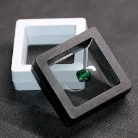
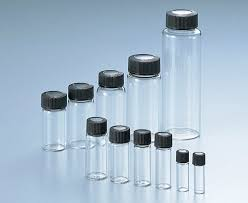
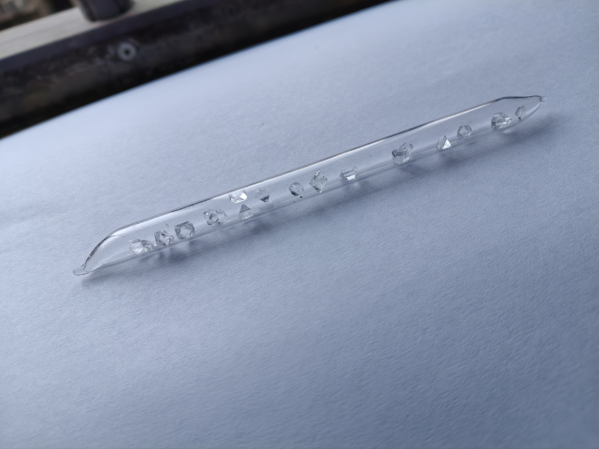

晶体化学指南
晶体保存篇
基础认识
不同的晶体各自有自己的最好保存方法，这里按照观赏效果排名做分类。
以下资料源自用户 紫色硫酸铜
No.1 PE悬浮盒保存（最推荐）
PE悬浮盒是一种形状扁的中间是透明塑料膜 四周是固定塑料膜的塑料框架（塑料框架有多种颜色） 的盒子 关闭并且未装物品时 盒子中间的两片柔软的塑料膜贴合在一起 装晶体时 打开盒子把晶体 放在塑料膜中间 关闭盒子让塑料膜固定晶体 以达到保存目的
另外
- 如果要保存的晶体容易潮解、氧化，则在关闭盒子后戴上手套把晶体四周的塑料薄膜捏合，使晶体处于封闭环境不接触空气
- 若晶体易风化并且想用悬浮盒保存，则把塑料膜里的空气留少一些（不过大部分情况下这样只能减缓晶体的风化速度）
缺点：

保存晶体所需空间相比其他方法更多 难保存易风化的晶体
且悬浮盒并没有防尘功能，因此需在盒子上方加设防尘物体
No.2 指甲油保存法
- 在晶体表面先后涂两层指甲油以达到保存目的 此方法可以保存易风化 氧化 潮解的各种晶体
缺点：
不能保存可以和指甲油反应或者溶于指甲油的晶体 涂指甲油后晶体一定程度上会失去规整的形状(最大痛点)
No.3 滴胶保存法
- 把晶体保存在滴胶内 随时拿出观赏(最后呈现的效果是透明方块内包装着晶体)
可考虑购置滴胶模具
缺点：
需要一定滴胶技术，不然容易在保存时在“透明方块”内出现气泡破坏观赏效果。此方法不能保存能和滴胶反应的晶体以及一些滴胶凝固时会使晶体经历高温的环境 一些滴胶呈碱性 需要注意这些是否会破坏晶体
No.4 西林瓶/玻璃样品瓶保存（最推荐）
- 把晶体放在西林瓶里保存
缺点：

无法保存很大的晶体 易风化的晶体 不能频繁移动西林瓶否则晶体磕碰瓶壁损伤
No.5 石蜡油保存晶体(易风化晶体专用)
- 把晶体放在盛有石蜡油的瓶子中保存
缺点：
因为石蜡油的折射率和晶体相近 晶体看起来棱角感没有在空气里分明
No.6 玻封保存晶体
- 将晶体封存在全封闭玻璃内保存
一般是把晶体置入玻璃试管，用喷枪加热上方玻璃时期融化形成密闭空间
缺点：

因为玻璃内环境依然是气体(或真空) 此方法依然不能保存易风化的晶体 以及用玻封后若频繁移动玻封(此处玻封为名词) 晶体会和玻璃碰撞损伤 玻璃上也会带有晶体留下的痕迹 破坏观赏效果
图源：紫色硫酸铜